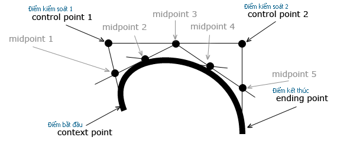

Vẽ đường cong Bizier
HTML5 Canvas Bezier Curve Tutorial
Để tạo ra một đường cong Bezier với HTML5 Canvas, chúng ta có thể sử dụng method bezierCurveTo(). Đường cong Bezier được xác định bởi 1 điểm bắt đầu, 2 điểm kiểm soát và 1 điểm kết thúc. Không giống như đường cong bậc hai Quadratic, đường cong Bezier được định nghĩa với 2 điểm kiểm soát thay vì một, cho phép chúng ta tạo ra độ cong phức tạp hơn.
Thuộc tính của đường cong Bezier bao gồm: linewidth : độ dày, strokeStyle : màu , lineCap : kiểu bo gốc.

Cấu trúc: bezierCurveTo( controlX1, controlY1, controlX2, controlY2, endX, endY ).
- .moveTo(x,y) : x,y : tọa độ điểm bắt đầu.
- .bezierCurveTo(x1, y1, x2, y2, x3, y3);
x1, y1: Tọa độ điểm kiểm soát 1.
x2, y2: Tọa độ điểm kiểm soát 2.
x3, y3: Tọa độ điểm kết thúc.
Khung edit HTML : (có thể sửa và test trực tiếp)